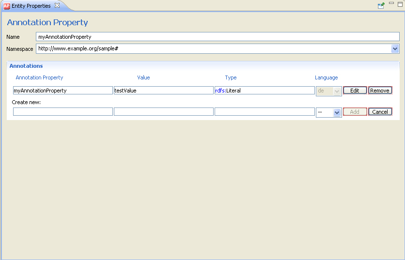

OWL allows classes, properties, individuals, and the ontology header to be annotated with useful information such as labels, comments, creation date, author, or references to web pages. An OWL annotation simply associates property-value pairs for resources of the ontology or the entire ontology itself. However, this information is not really part of the semantics of the ontology and will thus be ignored by reasoning engines.
The selection of meaningful names and the use of annotations is especially important for documentation, maintenance, and traceability purposes, e.g. if the ontology is to be read or reused by someone else. You can enter annotations when you first create a resource or when you modify it later on.
There are a number of built-in annotation properties already pre-specified by RDF(S) and OWL2, which can be used immediately, e.g.:
But you can also introduce your own new annotation properties. For instructions on how to do that, see Create an Annotation Property.

Online References
Further information is available at the following Web sites: